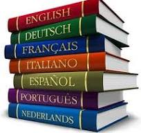
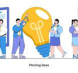
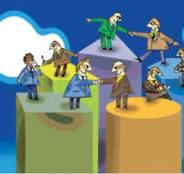
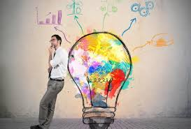

ІТ-навички
У секторі ІТ є багато різноманітних професій і спеціальностей, окрім того, величезна кількість нових професій утворюється на стику з ІТ. На сьогодні це величезний ринок, який потребує великої кількості спеціалістів різних профілів. Важливо пам'ятати, що у наше технологічне інформаційне століття представник будь-якої професії має оволодіти як мінімум базовими ІТ-навичками. |
Іноземна моваСвіт глобалізується, і переважну частину інформації представлено англійською мовою — це основні наукові роботи і найбільші досягнення у різних галузях. Тому знання цієї мови вже не є професією, а є необхідністю для будь-якої сучасної людини. Вивчивши її, ти завжди з великим комфортом зможеш подорожувати світом, читати книжки, які можуть тривалий час не перекладати твоєю рідною мовою. А володіння ще однією іноземною мовою, окрім англійської, — це може бути і професією, і додатковою конкурентною перевагою на ринку праці. |
ПроактивністьАктивна життєва позиція — вміння обстоювати власну думку та позицію, брати на себе відповідальність, доводити справу до кінця, знати і розуміти те, чого ти бажаєш, вміння заявити про свої бажання — це одна з найважливіших навичок у побудуванні успішної кар'єри у XXI столітті. |
СамоорганізаціяЦе одна з найзатребуваніших навичок - вміння організувати свій день гармонійно, щоб у ньому були всі важливі для тебе заняття — навчання, діяльність, хобі, відпочинок, спілкування з рідними, друзями і цікавими людьми, спорт тощо. Наявність цієї навички передбачає, що ти вмієш обслуговувати себе — приготувати їжу, привести до ладу свої речі, харчуватися так, щоб бути енергійним і здоровим. |
Вміння презентувати ідеїЯкщо в тебе виникла геніальна ідея, але ти не зумієш її ефективно презентувати, світ не дізнається про неї. Багато хто зі здібних людей не зміг но належному рівні реалізуватися у житті лише тому, що не вміли просувати свої ідеї, показати, на що вони здатні. їм заважала або удавана скромність, або манія величі — вони вважали, якщо вони талановиті, то їх хтось помітить і запропонує роботу, потрібно лише сидіти й чекати. Користуйся будь-якою можливістю для того, щоб розвинути навички самопрезентації. |
Навички крос-культурного спілкуванняСпілкування та взаємодія між людьми — представниками різних культур, національностей, рас. Толерантність до інших цінностей і переконань, інших правил і норм. |
Навички комунікаціїВміння встановлювати контакти з іншими незнайомими людьми, вміння доносити свої думки до співрозмовника, вміння слухати. Створення умов для ефективної усної, письмової та мультимедійної комунікації у різних формах і контекстах, керування нею та її розуміння. |
Навички міжособистісної взаємодії та співробітництваЗдатність працювати в команді, взаємодіяти, продуктивно працювати з іншими людьми, поважати їхні точки зору, готовність приймати на себе різні ролі та відповідальність. Команди можуть зробити те, що не під силу одній людині, а вміння побачити сильні сторони всіх учасників команди — це одна з найголовніших навичок справжнього лідера. |
Відповідальність і адаптивністьОсобиста відповідальність і гнучкість у різноманітних міжособистісних, професійних і соціальних ситуаціях, встановлення високих стандартів і цілей для себе й для інших. Відстеження власного розуміння і навчальних потреб, пошук необхідних ресурсів, трансформація знання з однієї галузі в іншу. |
Оволодіння новими навичками і методамиТреба брати на озброєння концепцію «навчання протягом усього життя». Навчання не закінчується після випускного, кожній людині потрібно постійно освоювати все нові й нові знання та навички. Інвестиції до людського капіталу полягають саме в цьому: вкладай частину вільного часу у .Ти повинен самостійно взяти на себе відповідальність за своє навчання. |
Фінансова грамотністьПочинаючи з юного віку треба навчатися управління власними фінансами, для вас — кишеньковими грошима. Хто вміє грамотно розпорядитися 100 гривнями, той зможе управляти й мільйоном. |
Творче мисленняЧасто під цими словами розуміють вміння малювати або грати на музичних інструментах. Але це не так, творче мислення — це здатність вигадувати оригінальні ідеї, проекти і вирішення задач, вносити покращення у життя, у стосунки, в ігри, вбачати позитивні можливості у проблемах. Будь-яка справа, яку ви робите якось інакше, наприклад, прибирання у своїй кімнаті, привітання друга із днем народження, — це вже шанс проявити свій творчий підхід. |